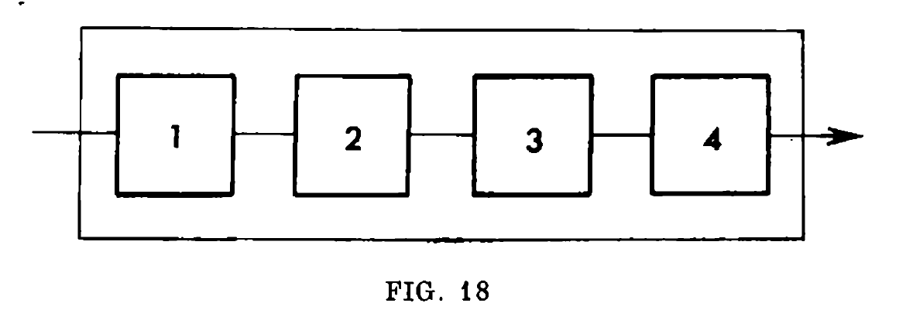

Amino Acids

Suppose we want to estimate the mean duration of failure-proof operation of the apparatus provided all characteristics of the failure-proof operation of each of the elements are known. If we assume that the duration of failure-proof operation of each element \(t_{k}\) is fixed, then the calculation of time t of failure-proof operation of the whole unit presents no problems. For example, failure of anyone of the elements of the unit drawn in \(Fig.18\) entails the failure of the whole unit, i.e. \[t = \min(t_{1}, t_{2}, t_{3}, t_{4})\] For the unit shown in \(Fig.19\) where one of the elements has a stand-by element \[ t = \min(t_{1}, t_{2}, \max(t_{3}, t_{4}), t_{5})\] since when one element, \(N_{3}\) for example, will break down, the unit will continue functioning on the remaining element \(N_{4}\)

{kind=link}

Simulation There are a bunch of ways we can arrive at this simulation. But before that, look at the above images from the textbook.
- \(Fig.18\) shows four resistors connected in series. Let us define this connection as follows \[R \asymp R \asymp R \asymp R \rightarrow 1-1-1-1\]
- \(Fig.19\) shows 5 resistors connected such that 3 and 4 are in parallel connected to the other ones that are in series \[R \asymp R \asymp R \parallel R \asymp R \rightarrow 1-1-2-1\]
- Given that you understand this notation, we will run simulations for the following configurations \[R \asymp R \asymp R \asymp R \rightarrow 1-1-1-1\] \[R \parallel R \asymp R \asymp R \asymp R \rightarrow 2-1-1-1\] \[R \parallel R \asymp R \parallel R \asymp R \asymp R \rightarrow 2-2-1-1\] \[R \parallel R \asymp R \parallel R \asymp R \parallel R \asymp R \rightarrow 2-2-2-1\] \[R \parallel R \asymp R \parallel R \asymp R \parallel R \asymp R \parallel R \rightarrow 2-2-2-2\] \[R \parallel R \parallel R \asymp R \parallel R \asymp R \parallel R \asymp R \parallel R \rightarrow 3-2-2-2\] \[R \parallel R \parallel R \asymp R \parallel R \parallel R \asymp R \parallel R \asymp R \parallel R \rightarrow 3-3-2-2\] \[R \parallel R \parallel R \asymp R \parallel R \parallel R \asymp R \parallel R \parallel R \asymp R \parallel R \rightarrow 3-3-3-2\] \[R \parallel R \parallel R \asymp R \parallel R \parallel R \asymp R \parallel R \parallel R \asymp R \parallel R \parallel R \rightarrow 3-3-3-3\]
- Also note that the study here is nothing to do with the actual resistances of the devices but only the lifetimes
- All the resistors have same lifetime distribution which is exponential with a λ = 5
- All the plots below represent the same data but with different chart styles. The names of the chart
styles in
sequence are
- HistogramDensity
- PointDensity
- SmoothDensity
- Notice how the reliability increases as we increase the number of resistors that have a "backup parallel
resistor attached to it"
- which is further enhanced by the number of parallel resistors at each junction
Code
Column@Module[{plotData},
plotData = Table[
With[{var = #},
Module[{
figs = <|
4 -> ({#[[1]], #[[2]], #[[3]], #[[4]]} &),
5 -> ({Max[{#[[1]], #[[2]]}], #[[3]], #[[4]], #[[5]]} &),
6 -> ({Max[{#[[1]], #[[2]]}], Max[{#[[3]], #[[4]]}], #[[5]], #[[6]]} &),
7 -> ({Max[{#[[1]], #[[2]]}], Max[{#[[3]], #[[4]]}], Max[#[[5]], #[[6]]], #[[7]]} &),
8 -> ({Max[{#[[1]], #[[2]]}], Max[{#[[3]], #[[4]]}], Max[#[[5]], #[[6]]], Max[#[[7]], #[[8]]]} &),
9 -> ({Max[{#[[1]], #[[2]], #[[3]]}], Max[{#[[4]], #[[5]]}], Max[#[[6]], #[[7]]], Max[#[[8]], #[[9]]]} &),
10 -> ({Max[{#[[1]], #[[2]], #[[3]]}], Max[{#[[4]], #[[5]], #[[6]]}], Max[#[[7]], #[[8]]], Max[#[[9]], #[[10]]]} &)
11 -> ({Max[{#[[1]], #[[2]], #[[3]]}], Max[{#[[4]], #[[5]], #[[6]]}], Max[#[[7]], #[[8]], #[[9]]], Max[#[[10]], #[[11]]]} &),
12 -> ({Max[{#[[1]], #[[2]], #[[3]]}], Max[{#[[4]], #[[5]], #[[6]]}], Max[#[[7]], #[[8]], #[[9]]], Max[#[[10]], #[[11]], #[[12]]]} &)
|>,
lifeTimes, simulation},
lifeTimes = RandomVariate[ExponentialDistribution[5], {1, var}];
lifeTimes = figs[var][#] & /@ lifeTimes;
simulation = Min /@ lifeTimes;
Mean@simulation]] & /@ Range[4, 12], 2000];
DistributionChart[Transpose@plotData, ChartElementFunction -> #,
ChartLabels -> Placed[Rotate[#, 0 \[Pi]] & /@ (StringJoin[# <> "\n"] & /@ {"1-1-1-1",
" 2-1-1-1", "2-2-1-1", "2-2-2-1", "2-2-2-2", "3-2-2-2",
"3-3-2-2", "3-3-3-2", "3-3-3-3"}), Above],
ImageSize -> 788,
PlotLabel -> "Configurations and Lifetime Profiles"] & /@ {"SmoothDensity","PointDensity", "Density", "HistogramDensity"}]